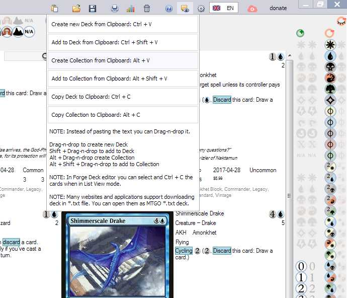
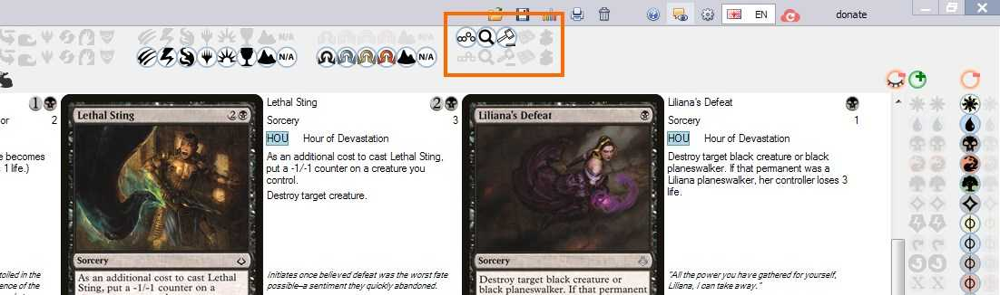

Tables .xlsx .csv .odt …
Suppose you have your collection (or maybe a deck) in a file of some tabular format like .csv,
.xlsx, .odt or any oter like these.
The simplest and the most robust way to make Mtgdb.Gui use it is by using Clipboard Copy & Paste operations.
Steps to import
-
Open your file in some table editor:
- Microsoft Excel
- Libre Office Calc
- Google Docs Spreadsheet
- csv-viewer-editor webapp
-
Select 2 columns: one with card names, another with quantities, copy selection to clipboard by
Ctrl+C -
In Mtgdb.Gui use Paste menu -> Create collection from clipboard

{kind=link}
Done, your collection should be loaded into Mtgdb.Gui by now.
Inspect imported cards in Mtgdb.Gui
Enable filter by collection by using Filter manager. You may also want to clear all other filters that may be hiding your cards by unchecking all filter manager buttons except the filter by collection, like in screenshot below.
{kind=link}
How to copy & paste from Libre Office Calc
Ctrl + C works with a huge delay in Calc, so the clibpoard won't change some 5-10 seconds
after you hit Ctrl + C. After that you will be able to succesfully paste into Mtgdb.Gui.
How to import csv to Google Docs Spreadsheet
Create new Spreadsheet, then from menu: File -> Import -> Upload tab -> Select your csv file.